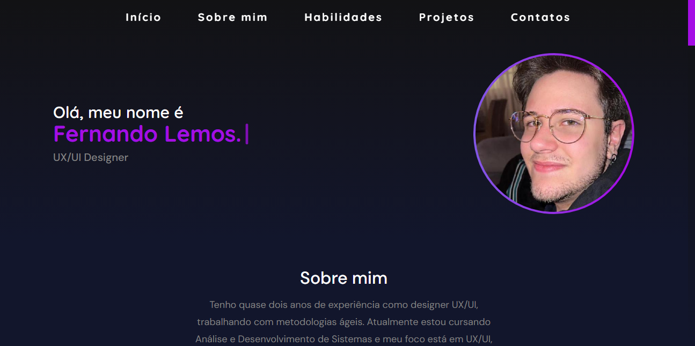

Home>Projetos>Caso
PORTFÓLIO
Vamos Começar
Este projeto representa o desenvolvimento do meu portfólio pessoal como UX/UI Designer. A ideia era criar uma experiência que refletisse minha identidade visual, comunicasse minhas habilidades e, ao mesmo tempo, proporcionasse uma navegação fluida, intuitiva e responsiva para diferentes perfis de visitantes.
Criei um site autoral que reunisse minha trajetória profissional, organização de projetos, diferenciais e personalidade de forma atrativa e funcional. O desafio foi estruturar bem o conteúdo e criar um layout moderno e coerente com minhas preferências visuais, com foco em recrutadores e colegas da área.
Organizei o conteúdo com uma hierarquia clara: introdução, sobre mim, formação, experiências, habilidades (divididas em hard e soft skills), projetos e contatos. Isso facilita a leitura escaneável e ajuda o usuário a encontrar o que precisa com agilidade.
Ano
2023-2025
Escopo do Trabalho
User Interface
User Experience
Portfolio
Front-end Dev
Duração
Contínuo
Wireframe

Antes de partir para os protótipos visuais, comecei organizando toda a estrutura do conteúdo em um wireframe de baixa fidelidade. O foco aqui foi desenhar uma jornada clara e objetiva para o usuário, principalmente pensando nos diferentes perfis que acessariam o portfólio — recrutadores, designers e colegas da área.
Cada seção foi cuidadosamente posicionada com base em critérios de usabilidade e escaneabilidade. As sessões iniciais como “Sobre mim”, “Formação” e “Experiências” foram pensadas para criar conexão emocional e gerar credibilidade logo de início. Já as habilidades foram divididas entre hard e soft skills, com um layout modular que permite leitura rápida. A área de projetos, que é o ponto de maior interesse, foi destacada visualmente com boxes interativos que simulam cards clicáveis, incentivando a navegação contínua.
Prototipagem no Figma
A etapa de prototipagem foi conduzida no Figma, utilizando os wireframes como base estrutural. Apliquei a identidade visual definida — com tons roxos, preto e branco, fontes modernas como Quicksand e DM Sans —, garantindo coesão estética e profissionalismo.
Na prototipação, também levei em consideração o comportamento responsivo. Criei variações de telas para mobile e desktop, simulando o comportamento dos elementos em diferentes breakpoints. Isso me ajudou a prever ajustes e otimizar a experiência de navegação em dispositivos variados ainda antes do código.
Implementação do Código e Publicação
Após a aprovação do protótipo, iniciei a codificação do site utilizando HTML, CSS e JavaScript puro. Mantive o foco na performance, sem frameworks pesados, garantindo leveza e agilidade no carregamento.
Estruturei o conteúdo com semântica, estilizei com CSS moderno e adicionei interatividade via JavaScript, como os modais de visualização de projetos. Todo o código foi versionado via Git e publicado no GitHub, possibilitando controle de versões e fácil compartilhamento com recrutadores e colegas da área.
Você pode acessar o repositório completo clicando aqui.